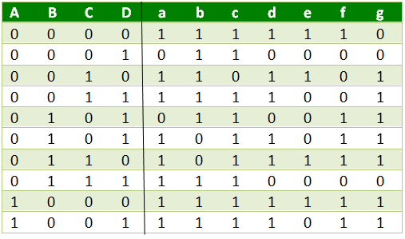
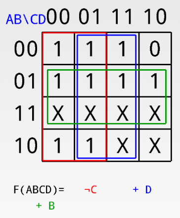
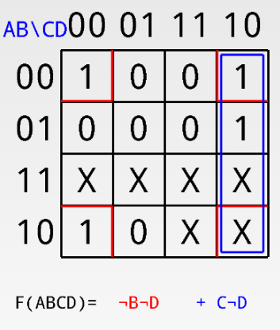
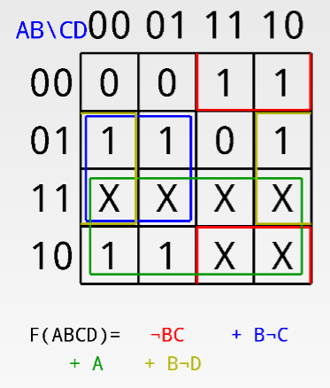

Prerequisite – Number System and base conversions, BCD(8421)
In Binary Coded Decimal (BCD) encoding scheme each of the decimal numbers(0-9) is represented by its equivalent binary pattern(which is generally of 4-bits).
Whereas, Seven segment display is an electronic device which consists of seven Light Emitting Diodes (LEDs) arranged in a some definite pattern (common cathode or common anode type), which is used to display Hexadecimal numerals(in this case decimal numbers,as input is BCD i.e., 0-9).
Two types of seven segment LED display:
- Common Cathode Type: In this type of display all cathodes of the seven LEDs are connected together to the ground or -Vcc(hence,common cathode) and LED displays digits when some ‘HIGH’ signal is supplied to the individual anodes.
- Common Anode Type: In this type of display all the anodes of the seven LEDs are connected to battery or +Vcc and LED displays digits when some ‘LOW’ signal is supplied to the individual cathodes.
But, seven segment display does not work by directly supplying voltage to different segments of LEDs. First, our decimal number is changed to its BCD equivalent signal then BCD to seven segment decoder converts that signals to the form which is fed to seven segment display.
This BCD to seven segment decoder has four input lines (A, B, C and D) and 7 output lines (a, b, c, d, e, f and g), this output is given to seven segment LED display which displays the decimal number depending upon inputs.

Truth Table – For common cathode type BCD to seven segment decoder:

Note –
- For Common Anode type seven segment LED display, we only have to interchange all ‘0s’ and ‘1s’ in the output side i.e., (for a, b, c, d, e, f, and g replace all ‘1’ by ‘0’ and vice versa) and solve using K-map.
- Output for first combination of inputs (A, B, C and D) in Truth Table corresponds to ‘0’ and last combination corresponds to ‘9’. Similarly rest corresponds from 2 to 8 from top to bottom.
- BCD numbers only range from 0 to 9,thus rest inputs from 10-F are invalid inputs.
Example –

Explanation –
For combination where all the inputs (A, B, C and D) are zero (see Truth Table), our output lines are a = 1, b = 1, c = 1, d = 1, e = 1, f = 1 and g = 0. So 7 segment display shows ‘zero’ as output.
Similarly, for combination where one of the input is one (D = 1) and rest are zero,our output lines are a = 0, b = 1, c = 1, d = 0, e = 0, f = 0 and g = 0. So only LEDs ‘b’ and ‘c’ (see diagram above) will glow and 7 segment display shows ‘one’ as output.
K-Maps:
#for a:

#for b:

#for c:

#for d:

#for e:

#for f:

#for g:

Applications –
Seven-segment displays are used to display the digits in calculators, clocks, various measuring instruments, digital watches and digital counters.